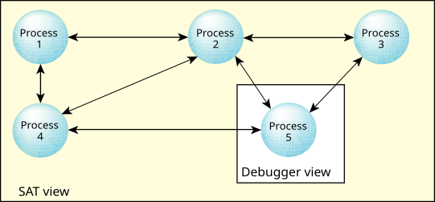

The results of this activity are changes to the system state that are normally hidden from developers. The SAT is capable of intercepting these changes and logging them. Each event is logged with a timestamp and the ID of the CPU that handled it.
The SAT offers valuable information at all stages of a product's lifecycle, from prototyping to optimization to in-service monitoring and field diagnostics.

In large systems, often consisting of many interconnected components or processes,
standard debuggers may not provide enough information to solve the problem.
Or, the problem may not be a bug as much as a process that's not behaving as expected.
Unlike the SAT, debuggers lack the execution history essential to solving the many complex problems involved in application tuning.
Traditional debugging, which lets you look at only a single module,
can't easily assist if the problem lies in how the modules interact with each other.
Where a debugger can view a single process, the SAT can view all processes at the same time.
Also, the SAT doesn't need code augmentation and can be used to track the impact of external, precompiled code.
Because it offers a system-level view of the internal workings of the kernel, the SAT can be used for performance analysis and
optimization of large systems as well as single processes.
For a full understanding of how the kernel works, see the
QNX OS Microkernel
chapter in the System Architecture guide.
The SAT allows realtime debugging to help pinpoint deadlock and race conditions by showing what circumstances led up to the problem.
Rather than just a snapshot
, the SAT offers a movie
of what's happening in your system.
It also offers a nonintrusive method of instrumenting the code—programs can literally monitor themselves.
In addition to passive/non-intrusive event tracing, you can proactively trace events by injecting your own flag
events.